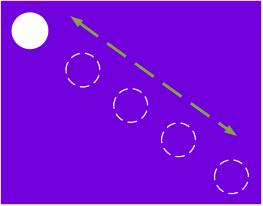

| Start time | Expected observation |
|---|---|
| 00:00:25:01 | A new series of five image subtitles appears: a ‘moon’ moving from upper left to lower right, and then returning to
the upper left. The top, middle, and bottom images have a white background, and the other two images have no background
(video can be seen through the "hole").  Overall, the change in positioning is even, without skips in the sequence. The "moon" continues to move from upper left to lower right, with the following background colors matching up with each image: Fuchsia (upper left) No background (middle upper left) Yellow (center) No background (middle lower right) Cyan (lower right) No background (middle lower right) Yellow (center) No background (middle upper left) Fuchsia (upper left) No background (middle upper left) Yellow (center) |